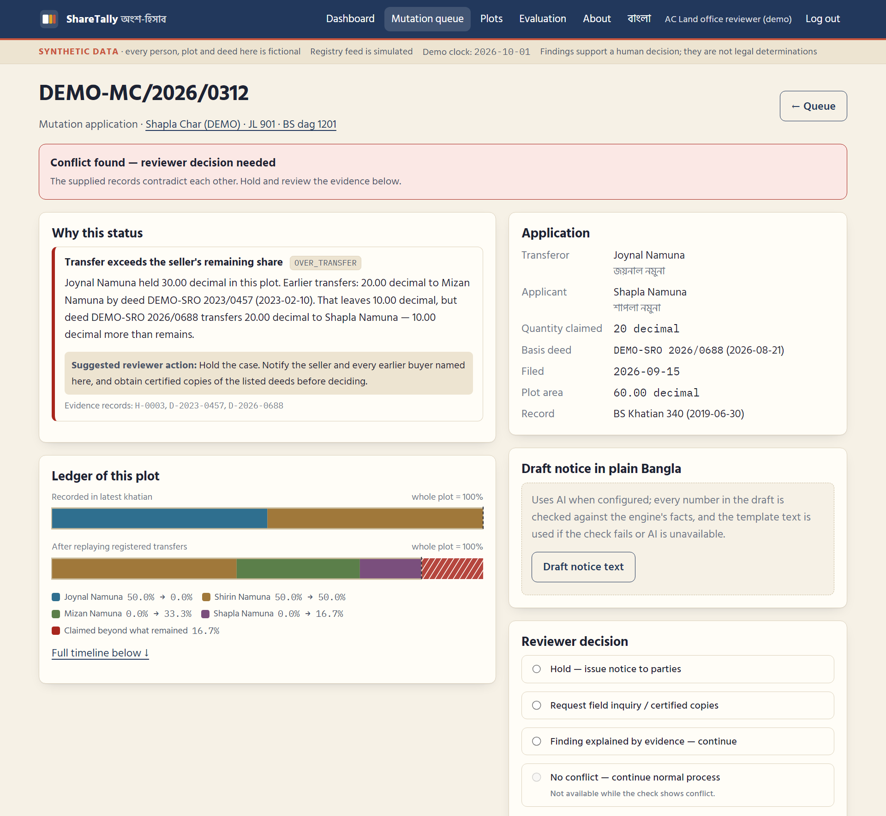
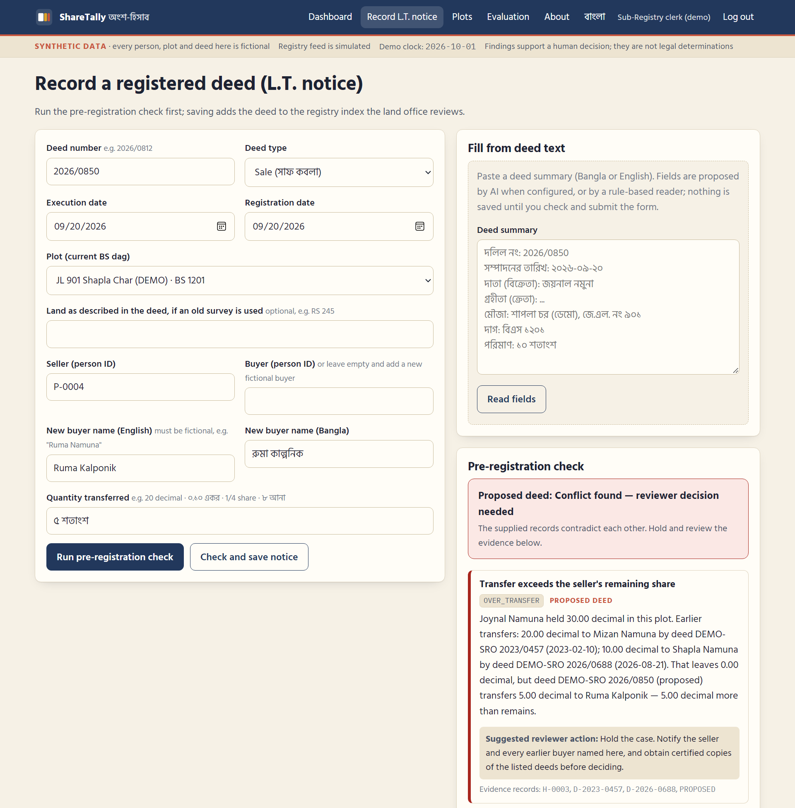

A plot cannot be sold twice if every share is accounted for — before mutation.
The red part: land that had already been sold.
Deeds: Sub-Registry (Law Ministry). Khatian: AC (Land) mutation (Land Ministry). The rule book names this split as a root of disputes.
Only ~30% of new owners applied for mutation within 3 months in a 2018 trial across 46 upazilas.
BIT, 2020
A sale deed is registered on the latest khatian plus the seller's own affidavit that they have not sold before.
Registration Act s.52A
Until the first buyer mutates, the khatian still shows the seller — so the same share can be sold again, and the second buyer may reach the mutation desk first.
The Sub-Registrar must send a Land Transfer (L.T.) notice for every registered transfer (SAT Act 1950 s.89), and the land office must open a mutation file on it (s.143C).
We only need it digital and reconciled.

Conflict OVER_TRANSFER
Remaining: 10.00 decimal
Claimed: 20.00 decimal
Shortfall: 10.00 decimal
Earlier deed 2023/0457 was never mutated — so the khatian still showed Joynal. A khatian-only check would have cleared this case.
Suggested action: hold; notify every earlier buyer; get certified copies.

Conflict
Over-transfer · deed not in index · mutation ≠ deed · shares > 100%
Incomplete
Index gap · deed older than index · unknown seller · bigha undefined · old RS dag split · heir shares ≠ 1
Attention
Unmutated > 90 days · quick resale — context only
No conflict
"in the supplied records and coverage" — not a title guarantee
ShareTally never decides ownership and never calls anyone fraudulent. The AC (Land) decides; "proceed" is blocked while a conflict or gap remains.
Python fractions ledger engine (pure, tested) · FastAPI · SQLite · server-rendered pages, vanilla JS · 51 automated tests · optional Claude API with offline fallback
Hashed passwords · roles · CSRF · login throttling · strict CSP · hash-chained audit log storing the engine version with each decision
Drafts a plain-Bangla notice; rejected if it adds any number not in the engine's facts or uses accusatory words. Names are tokenised before sending.
100% synthetic: 49 plots, 163 fictional people ("Namuna", "Kalponik"), 62 deeds. No portal scraped, no real record used.
declared statuses and codes matched
clean plots wrongly flagged
incomplete cases called clean
problem cases a khatian-only check would clear
Same team wrote rules and expectations: this proves the mechanism works as designed, not real-world accuracy. Next: blind cases from land officers, then an approved anonymised sample.
Blind tests and rule review with land officers and legal advisers
Digital L.T. notices from 1–2 Sub-Registries into one AC (Land) office; read-only check
API inside the e-mutation screen; pre-registration check at Sub-Registry
Backfill historic deed indexes; upazila by upazila; per-plot compute scales out
Main risk: inter-ministry data sharing. Cost: prototype runs free; the check takes < 1 ms per plot on a laptop.
Students: Tanvir Hossin [role] · [NAME]
Faculty mentor: [NAME]
Industry mentor: [NAME]
Our ask: one upazila pilot — digital L.T. notices from its Sub-Registry, ShareTally beside e-mutation, measured for three months.